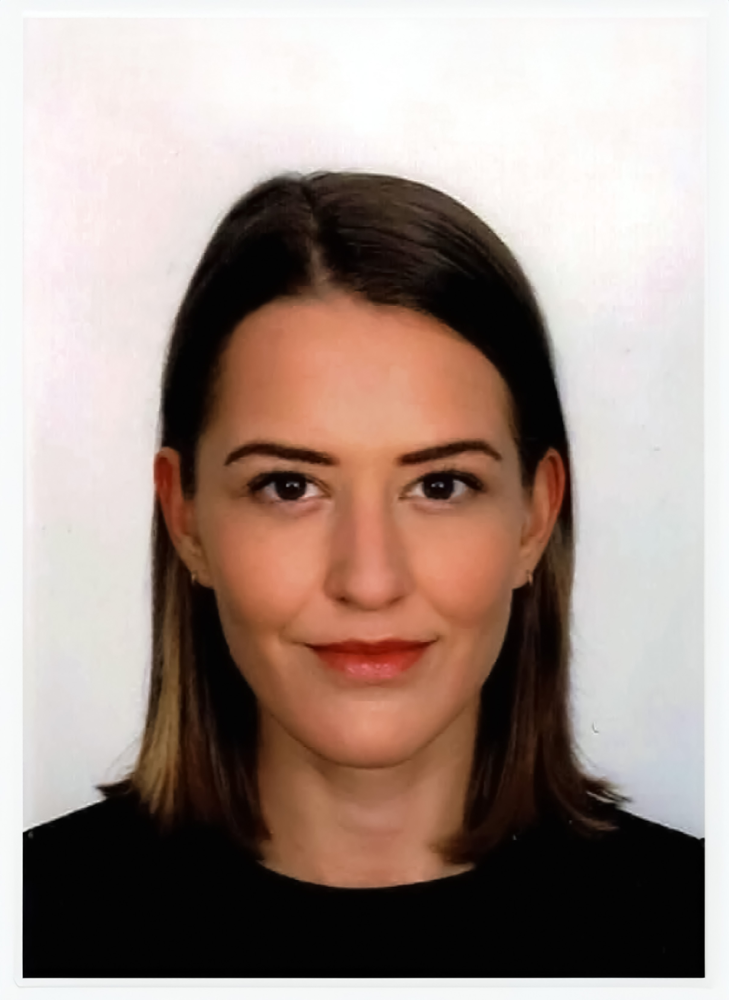

Inez Vierdag
I am an Amsterdam-based artist and researcher exploring what it means to be human in a world increasingly shaped by machines. My work investigates the "in-between" spaces: the friction between our physical bodies and digital lives, and the ways technology redefines identity, gender, and emotional well-being.
I am fascinated by the idea that AI has become a co-creator of the self—no longer just a tool, but a system that subtly shapes how we think, create, and understand our own agency. Through my practice, I investigate how we can navigate these complex structures while staying grounded in lived reality.
Currently pursuing a Research MA in Art and Performance Studies (Artistic Research track) at the University of Amsterdam, I hold a cum laude BA in Transformation Design from the Willem de Kooning Academy. I also serve as an organizer for ARRG (Artistic Research Research Group), and I am a member of NICA (Netherlands Institute for Cultural Analysis).
